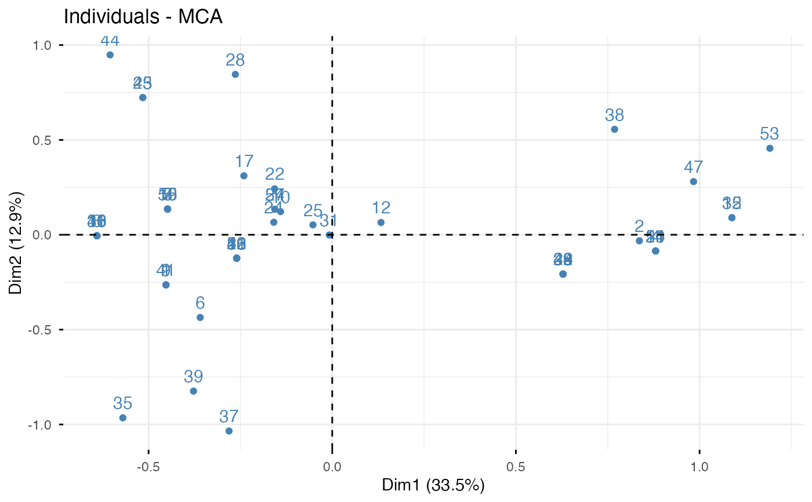
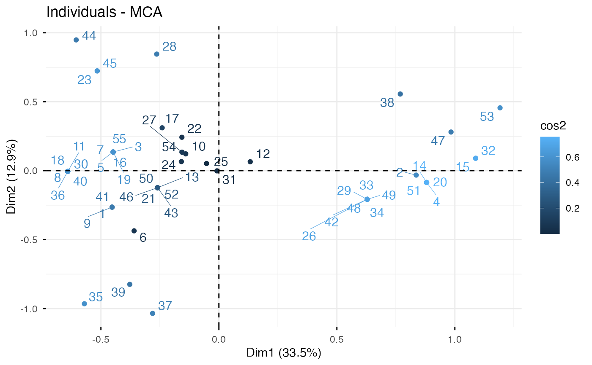
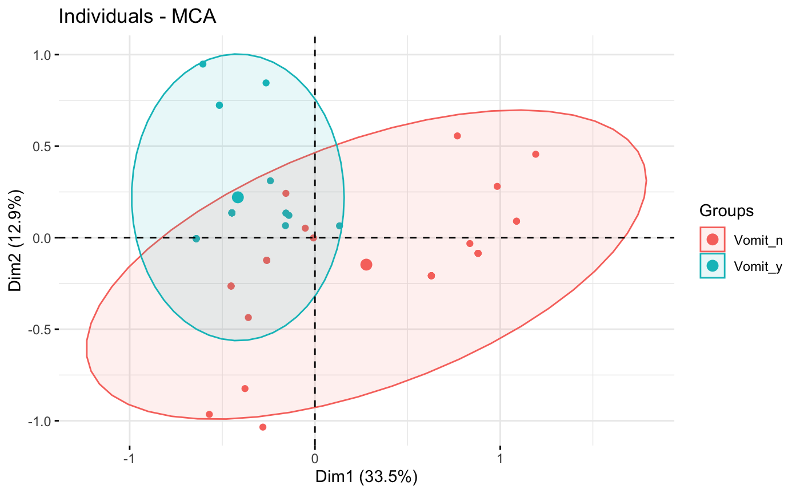
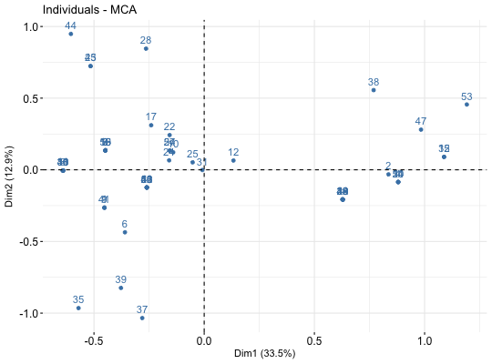
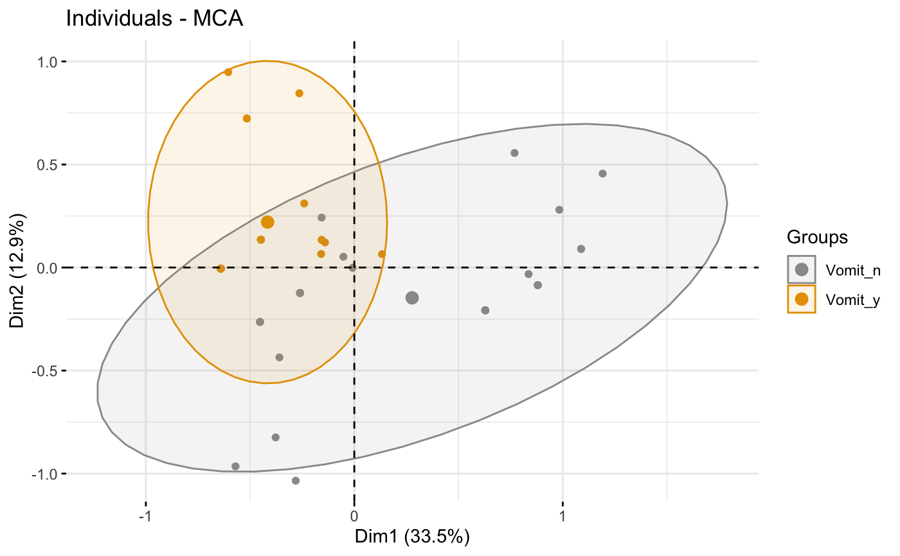
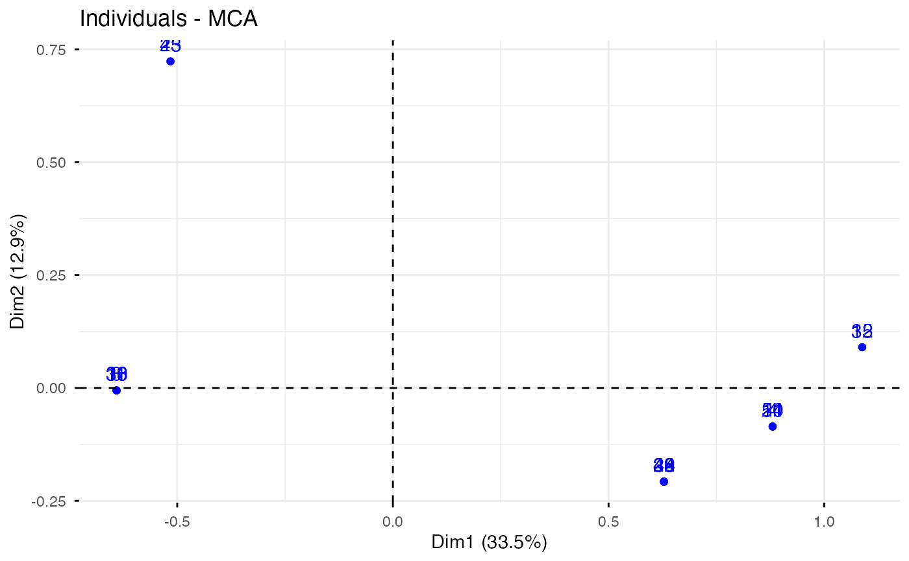
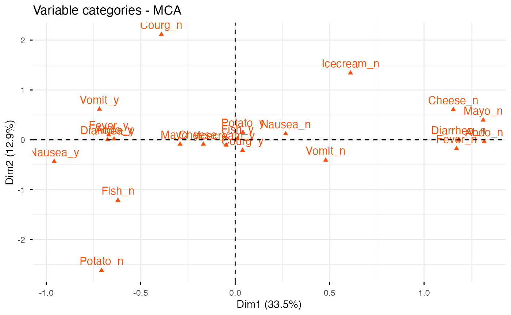
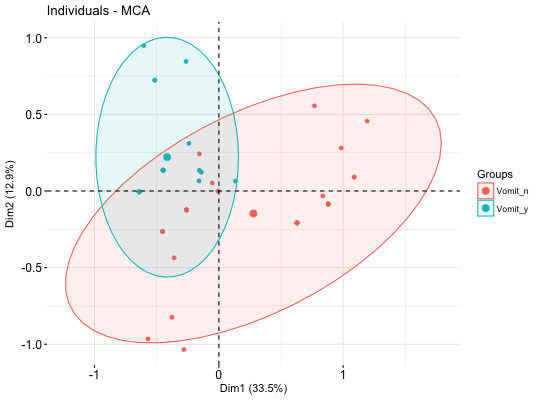
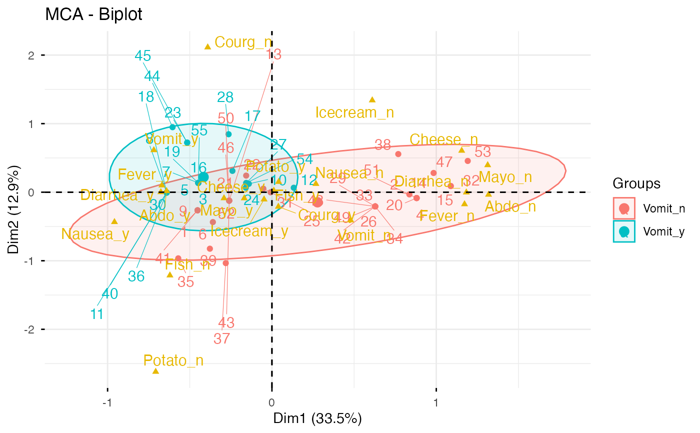

fviz_mca.RdMultiple Correspondence Analysis (MCA) is an extension of simple CA to analyse a data table containing more than two categorical variables. fviz_mca() provides ggplot2-based elegant visualization of MCA outputs from the R functions: MCA [in FactoMineR], acm [in ade4], and expOutput/epMCA [in ExPosition]. Read more: Multiple Correspondence Analysis Essentials.
fviz_mca_ind(): Graph of individuals
fviz_mca_var(): Graph of variables
fviz_mca_biplot(): Biplot of individuals and variables
fviz_mca(): An alias of fviz_mca_biplot()
fviz_mca_ind(X, axes = c(1, 2), geom = c("point", "text"), geom.ind = geom, repel = FALSE, habillage = "none", palette = NULL, addEllipses = FALSE, col.ind = "blue", col.ind.sup = "darkblue", alpha.ind = 1, shape.ind = 19, map = "symmetric", select.ind = list(name = NULL, cos2 = NULL, contrib = NULL), ...) fviz_mca_var(X, choice = c("var.cat", "mca.cor", "var", "quanti.sup"), axes = c(1, 2), geom = c("point", "text"), geom.var = geom, repel = FALSE, col.var = "red", alpha.var = 1, shape.var = 17, col.quanti.sup = "blue", col.quali.sup = "darkgreen", map = "symmetric", select.var = list(name = NULL, cos2 = NULL, contrib = NULL), ...) fviz_mca_biplot(X, axes = c(1, 2), geom = c("point", "text"), geom.ind = geom, geom.var = geom, repel = FALSE, label = "all", invisible = "none", habillage = "none", addEllipses = FALSE, palette = NULL, arrows = c(FALSE, FALSE), map = "symmetric", title = "MCA - Biplot", ...) fviz_mca(X, ...)
| X | an object of class MCA [FactoMineR], acm [ade4] and expOutput/epMCA [ExPosition]. |
|---|---|
| axes | a numeric vector of length 2 specifying the dimensions to be plotted. |
| geom | a text specifying the geometry to be used for the graph. Allowed
values are the combination of |
| geom.ind, geom.var | as |
| repel | a boolean, whether to use ggrepel to avoid overplotting text labels or not. |
| habillage | an optional factor variable for coloring the observations by groups. Default value is "none". If X is an MCA object from FactoMineR package, habillage can also specify the index of the factor variable in the data. |
| palette | the color palette to be used for coloring or filling by groups. Allowed values include "grey" for grey color palettes; brewer palettes e.g. "RdBu", "Blues", ...; or custom color palette e.g. c("blue", "red"); and scientific journal palettes from ggsci R package, e.g.: "npg", "aaas", "lancet", "jco", "ucscgb", "uchicago", "simpsons" and "rickandmorty". Can be also a numeric vector of length(groups); in this case a basic color palette is created using the function palette. |
| addEllipses | logical value. If TRUE, draws ellipses around the individuals when habillage != "none". |
| col.ind, col.var | color for individuals and variables, respectively. Can be a continuous variable or a factor variable. Possible values include also : "cos2", "contrib", "coord", "x" or "y". In this case, the colors for individuals/variables are automatically controlled by their qualities ("cos2"), contributions ("contrib"), coordinates (x^2 + y^2 , "coord"), x values("x") or y values("y"). To use automatic coloring (by cos2, contrib, ....), make sure that habillage ="none". |
| col.ind.sup | color for supplementary individuals |
| alpha.ind, alpha.var | controls the transparency of individual and variable colors, respectively. The value can variate from 0 (total transparency) to 1 (no transparency). Default value is 1. Possible values include also : "cos2", "contrib", "coord", "x" or "y". In this case, the transparency for individual/variable colors are automatically controlled by their qualities ("cos2"), contributions ("contrib"), coordinates (x^2 + y^2 , "coord"), x values("x") or y values("y"). To use this, make sure that habillage ="none". |
| shape.ind, shape.var | point shapes of individuals and variables. |
| map | character string specifying the map type. Allowed options include: "symmetric", "rowprincipal", "colprincipal", "symbiplot", "rowgab", "colgab", "rowgreen" and "colgreen". See details |
| select.ind, select.var | a selection of individuals/variables to be drawn. Allowed values are NULL or a list containing the arguments name, cos2 or contrib:
|
| ... | Additional arguments.
|
| choice | the graph to plot. Allowed values include: i) "var" and "mca.cor" for plotting the correlation between variables and principal dimensions; ii) "var.cat" for variable categories and iii) "quanti.sup" for the supplementary quantitative variables. |
| col.quanti.sup, col.quali.sup | a color for the quantitative/qualitative supplementary variables. |
| label | a text specifying the elements to be labelled. Default value is "all". Allowed values are "none" or the combination of c("ind", "ind.sup","var", "quali.sup", "quanti.sup"). "ind" can be used to label only active individuals. "ind.sup" is for supplementary individuals. "var" is for active variable categories. "quali.sup" is for supplementary qualitative variable categories. "quanti.sup" is for quantitative supplementary variables. |
| invisible | a text specifying the elements to be hidden on the plot. Default value is "none". Allowed values are the combination of c("ind", "ind.sup","var", "quali.sup", "quanti.sup"). |
| arrows | Vector of two logicals specifying if the plot should contain points (FALSE, default) or arrows (TRUE). First value sets the rows and the second value sets the columns. |
| title | the title of the graph |
a ggplot
The default plot of MCA is a "symmetric" plot in which both rows and columns are in principal coordinates. In this situation, it's not possible to interpret the distance between row points and column points. To overcome this problem, the simplest way is to make an asymmetric plot. The argument "map" can be used to change the plot type. For more explanation, read the details section of fviz_ca documentation.
# Multiple Correspondence Analysis # ++++++++++++++++++++++++++++++ # Install and load FactoMineR to compute MCA # install.packages("FactoMineR") library("FactoMineR") data(poison) poison.active <- poison[1:55, 5:15] head(poison.active)#> Nausea Vomiting Abdominals Fever Diarrhae Potato Fish Mayo #> 1 Nausea_y Vomit_n Abdo_y Fever_y Diarrhea_y Potato_y Fish_y Mayo_y #> 2 Nausea_n Vomit_n Abdo_n Fever_n Diarrhea_n Potato_y Fish_y Mayo_y #> 3 Nausea_n Vomit_y Abdo_y Fever_y Diarrhea_y Potato_y Fish_y Mayo_y #> 4 Nausea_n Vomit_n Abdo_n Fever_n Diarrhea_n Potato_y Fish_y Mayo_n #> 5 Nausea_n Vomit_y Abdo_y Fever_y Diarrhea_y Potato_y Fish_y Mayo_y #> 6 Nausea_n Vomit_n Abdo_y Fever_y Diarrhea_y Potato_y Fish_n Mayo_y #> Courgette Cheese Icecream #> 1 Courg_y Cheese_y Icecream_y #> 2 Courg_y Cheese_n Icecream_y #> 3 Courg_y Cheese_y Icecream_y #> 4 Courg_y Cheese_y Icecream_y #> 5 Courg_y Cheese_y Icecream_y #> 6 Courg_y Cheese_y Icecream_yres.mca <- MCA(poison.active, graph=FALSE) # Graph of individuals # +++++++++++++++++++++ # Default Plot # Color of individuals: col.ind = "steelblue" fviz_mca_ind(res.mca, col.ind = "steelblue")# 1. Control automatically the color of individuals # using the "cos2" or the contributions "contrib" # cos2 = the quality of the individuals on the factor map # 2. To keep only point or text use geom = "point" or geom = "text". # 3. Change themes: http://www.sthda.com/english/wiki/ggplot2-themes fviz_mca_ind(res.mca, col.ind = "cos2", repel = TRUE)if (FALSE) { # You can also control the transparency # of the color by the cos2 fviz_mca_ind(res.mca, alpha.ind="cos2") } # Color individuals by groups, add concentration ellipses # Remove labels: label = "none". grp <- as.factor(poison.active[, "Vomiting"]) p <- fviz_mca_ind(res.mca, label="none", habillage=grp, addEllipses=TRUE, ellipse.level=0.95) print(p)# Change group colors using RColorBrewer color palettes # Read more: http://www.sthda.com/english/wiki/ggplot2-colors p + scale_color_brewer(palette="Dark2") + scale_fill_brewer(palette="Dark2")# Change group colors manually # Read more: http://www.sthda.com/english/wiki/ggplot2-colors p + scale_color_manual(values=c("#999999", "#E69F00"))+ scale_fill_manual(values=c("#999999", "#E69F00"))# Select and visualize some individuals (ind) with select.ind argument. # - ind with cos2 >= 0.4: select.ind = list(cos2 = 0.4) # - Top 20 ind according to the cos2: select.ind = list(cos2 = 20) # - Top 20 contributing individuals: select.ind = list(contrib = 20) # - Select ind by names: select.ind = list(name = c("44", "38", "53", "39") ) # Example: Select the top 40 according to the cos2 fviz_mca_ind(res.mca, select.ind = list(cos2 = 20))# Graph of variable categories # ++++++++++++++++++++++++++++ # Default plot: use repel = TRUE to avoid overplotting fviz_mca_var(res.mca, col.var = "#FC4E07")# Control variable colors using their contributions # use repel = TRUE to avoid overplotting fviz_mca_var(res.mca, col.var = "contrib", gradient.cols = c("#00AFBB", "#E7B800", "#FC4E07"))# Biplot # ++++++++++++++++++++++++++ grp <- as.factor(poison.active[, "Vomiting"]) fviz_mca_biplot(res.mca, repel = TRUE, col.var = "#E7B800", habillage = grp, addEllipses = TRUE, ellipse.level = 0.95)if (FALSE) { # Keep only the labels for variable categories: fviz_mca_biplot(res.mca, label ="var") # Keep only labels for individuals fviz_mca_biplot(res.mca, label ="ind") # Hide variable categories fviz_mca_biplot(res.mca, invisible ="var") # Hide individuals fviz_mca_biplot(res.mca, invisible ="ind") # Control automatically the color of individuals using the cos2 fviz_mca_biplot(res.mca, label ="var", col.ind="cos2") # Change the color by groups, add ellipses fviz_mca_biplot(res.mca, label="var", col.var ="blue", habillage=grp, addEllipses=TRUE, ellipse.level=0.95) # Select the top 30 contributing individuals # And the top 10 variables fviz_mca_biplot(res.mca, select.ind = list(contrib = 30), select.var = list(contrib = 10)) }